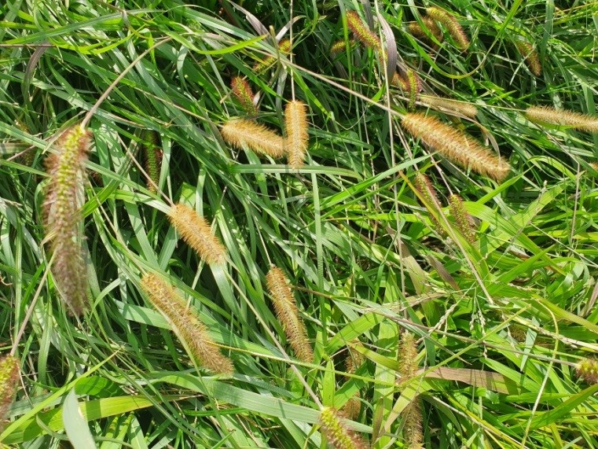
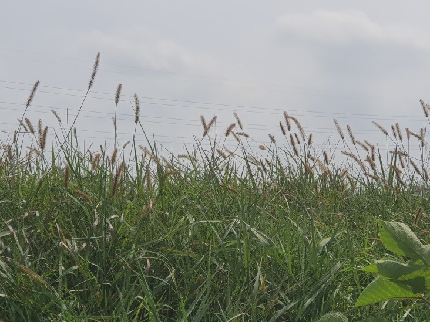
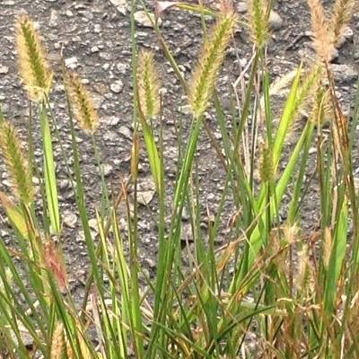
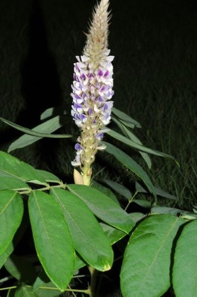
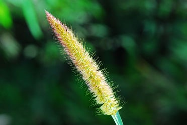
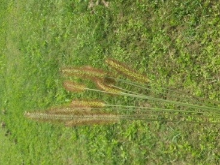
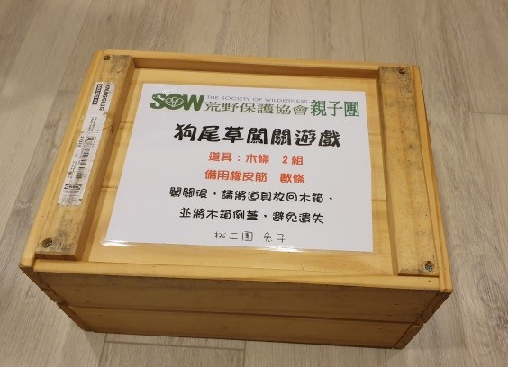
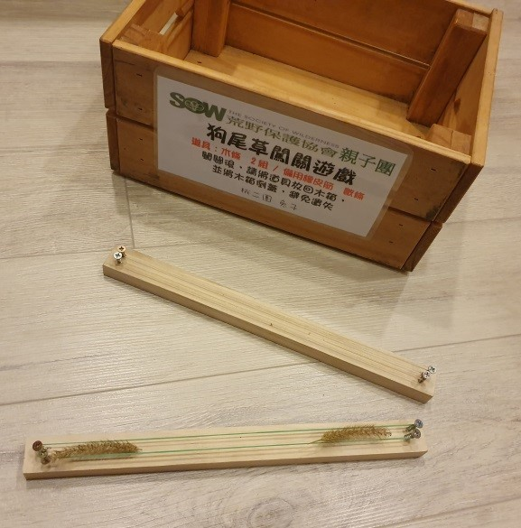

金色狗尾草
在五股溼地沿途看到許多鳥類、植物等自然生態，當你走在小路邊是否發現，有金黃色小草長長一列，黃黃的像稻穗十分耀眼，大約30~40公分高
小蟻小蜂和爸爸媽媽一起來仔細找找看

你們找到了嗎？
請帶著它來挑戰2個任務囉!
【挑戰1】
猜猜看它的名字叫什麼？
答題囉~
解答: 3. 狗尾草
(又名黃金狗尾草)
毛茸茸彎彎的像小狗尾巴在風中搖曳

照片來源:桃二親子團五股溼地場勘拍攝
【延伸閱讀】
當你上網Google【狗尾草】
你是否發現狗尾草的照片長得好像都不一樣呢?
有紫色、金色、有的尾巴像圓筒狀、有的尖尖的? 傻傻分不清楚
這次來到五股溼地讓我們一起來好好認識它們(狗尾草)吧!
【三種常見的狗尾草】
第一種___狗尾草 (也叫狗尾巴)
禾本科~狗尾草屬

照片來源: 第三者觀察報告網站
金色狗尾草是一年生草本植物，葉細長，花圓筒狀，毛黃金色。花期7-8月，種子成熟於8-9月，落地越冬，休眠後發芽新生。是路邊、農田、荒地，常可看見的金色狗尾草。
第二種___狗尾草 (也叫兔尾草、九尾草、通天草)
豆科~兔尾草屬(俗稱狗尾草)

照片來源:福星花園網站
根據『原色台灣藥用植物圖鑑』記載，狗尾草性溫、味甘、無毒、主治小兒發育不良，老一輩的阿嬤相傳可以《轉骨》，小孩子青春期發育不良，長不大，可以燉排骨或雞肉食用。民眾甚至把它煮水當茶飲用，味道有如人參茶故也有『台灣人參』之稱。
第三種___相似狗尾草 (它不是喔! )
其實是外來種叫_象草 (狼尾草)

照片來源:教育部防治外來入侵種及職務病蟲害電子報 象草的穗狀圓錐花序（陳瑋晨攝影）
象草 原產於非洲和菲律賓是熱帶和亞熱帶地區的多年生草本植物，由於大象愛吃而得名（英文俗名elephant grass）
象草的植莖高度通常可達二到四公尺，外來種對當地原本的弱勢物種造成很大的排擠情形。
【挑戰2】
1. 以2人一組完成「毛毛蟲大對決」遊戲即過關。
2. 完成挑戰後，請將橡皮筋和木條放回木箱內，並將木箱倒蓋恢復原狀，預防遺失及方便下一位夥伴使用。
遊戲方式:
1. 找到狗尾草關卡QR Code

2. 在附近尋找狗尾草遊戲木箱，箱內拿出木條和1條橡皮筋，將橡皮筋撐開固定在木條上的鐵釘上，形成軌道。

3. 請小心的摘取二根狗尾草去莖部，將狗尾草分別放在橡皮筋二端，以震動橡皮筋方式讓狗尾草前進。其中一方狗尾草毛毛蟲掉下或到達對面終點即勝利。

2. 請小心的摘取二根狗尾草去莖部，將狗尾草分別放在橡皮筋二端，以震動橡皮筋方式讓狗尾草前進。
3. 其中一方狗尾草毛毛蟲掉下或到達對面終點即勝利。
4.影片示範:
You Tube毛毛蟲大對決
歡迎拍下你和家人或夥伴，玩「毛毛蟲大對決」的影片，並上傳桃二FB或LINE群組和大家分享好玩的遊戲。
恭喜你已完成任務 請往下一關挑戰喔!加油